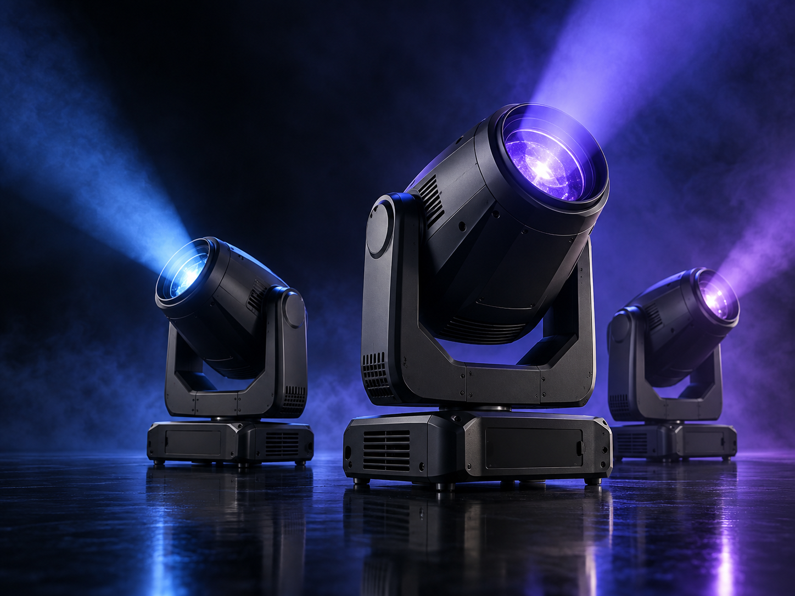

Feature · Lighting design
How light gives an event its point of view.
A great lighting plan does more than make a space visible. It guides attention, changes scale and creates a mood that lingers long after the final cue.
Discuss your brief →